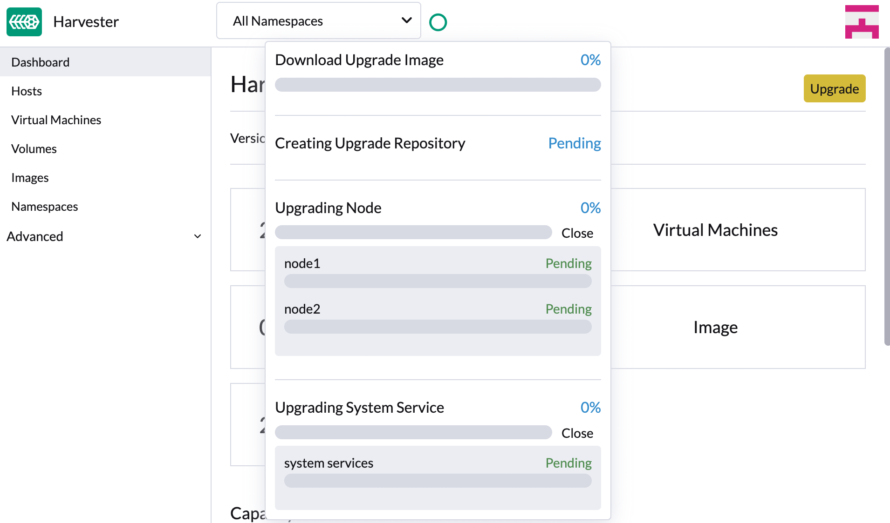

升级
SUSE Virtualization 正在采用一种新的生命周期策略，以简化版本管理和升级。该策略包括以下内容：
-
四个月的小版本发布节奏
-
两个月的补丁发布节奏
-
组件采用策略
|
SUSE Virtualization 不支持降级。此限制有助于防止与功能不兼容、弃用和去除相关的意外系统行为和问题。 |
升级路径
下表概述了支持的升级路径。
| 安装的版本 | 支持的升级版本 |
|---|---|
v1.6.x |
|
v1.6.x |
v1.6.y (y 大于 x) |
v1.5.x |
|
v1.5.0 和 v1.5.1 |
|
v1.5.0 |
|
v1.4.2 和 v1.4.3 |
|
v1.4.2 和 v1.4.3 |
|
v1.4.1 和 v1.4.2 |
|
v1.4.1 |
|
v1.4.0 |
|
v1.3.1 |
|
v1.2.2 和 v1.3.0 |
|
v1.2.1 |
|
v1.1.2、v1.1.3 和 v1.2.0 |
最新的 SUSE Virtualization 版本允许以下操作：
-
从一个小版本升级到下一个小版本（例如，从 v1.5.2 升级到 v1.6.1），而无需安装两个版本之间发布的补丁。这是可能的，因为 SUSE Virtualization 允许对基础组件进行最多一次的小版本升级。
-
升级到较新的补丁版本（例如，从 v1.6.0 升级到 v1.6.1），假设在给定的小版本中使用相同的组件版本。
下表概述了这些版本中使用的组件：
| 组件 | SUSE Virtualization v1.5.x | SUSE Virtualization v1.6.x | SUSE Virtualization v1.7.x |
|---|---|---|---|
KubeVirt |
v1.4 |
v1.5 |
v1.6 |
SUSE Storage |
v1.8 |
v1.9 |
v1.10 |
SUSE Rancher Prime |
v2.11 |
v2.12 |
v2.13 |
RKE2 |
v1.32 |
v1.33 |
v1.34 |
SUSE Linux Micro |
5.5 |
5.5 |
6.1 |
|
跳过多个 Kubernetes 次要版本在上游不受支持，这是限制升级路径的一个关键原因。有关详细信息，请参见 Kubernetes 文档中的 版本偏差策略。 |
Rancher 升级
如果您使用 Rancher 来管理您的 SUSE Virtualization 集群，则必须在升级 SUSE Virtualization 之前 升级 Rancher 。
|
SUSE Virtualization 和 Rancher 的升级过程是相互独立的。在 Rancher 升级期间，您仍然可以使用其虚拟 IP 访问您的 SUSE Virtualization 集群。SUSE Virtualization 不会自动升级。 |
当 Rancher 版本达到其维护结束（EOM）日期时，SUSE Virtualization 仅提供影响集成功能（虚拟化管理）的关键安全相关问题的修复。有关详细信息，请参见 支持矩阵。
通过升级进行虚拟机管理
不可迁移的虚拟机
当触发升级时，SUSE Virtualization 根据 upgrade-config 设置的 restoreVM 选项执行某些操作。
-
false: SUSE Virtualization 在 不可迁移的虚拟机 仍在运行时不会执行升级。您必须手动关闭虚拟机。 -
true: SUSE Virtualization 在节点升级时会自动关闭不可迁移的虚拟机，然后在节点重启后恢复它们。
|
不可迁移的虚拟机在迁移过程中会出现停机时间。 |
有关详细信息，请参见 第 4 阶段：升级节点。
在开始升级之前
查看可用的 upgrade-config 设置 以调整最适合您集群环境的升级策略和行为。
开始升级
|
|
|
连接到 PCI 桥的 NIC 可能在升级后被重命名。请查看 知识库文章 以获取更多信息。 |
|
从 v1.7.0 开始，SUSE Virtualization 使用基于部署的升级储存库，而不是基于虚拟机的方法，以提高性能和可靠性。有关更多信息，请参见 问题 #7101。 |
-
在 SUSE Virtualization 用户界面 仪表板 屏幕上，单击 升级。
每当有可升级的新版本可用时，升级 按钮会出现。
如果您的环境没有直接的互联网访问，请按照 [Prepare an air-gapped upgrade] 中的说明操作，该说明提供了一种有效的下载 .iso 映像 的方法。

-
选择要升级到的版本。
如果您需要自定义，请参见 [Customize the version]。

-
单击进度指示器（圆形图标）以查看每个相关处理的状态。

自定义版本
-
下载版本文件（
https://releases.rancher.com/harvester/{version}/version.yaml）。示例：
v1.5.0 版本文件 被下载为
v1.5.0.yaml。apiVersion: harvesterhci.io/v1beta1 kind: Version metadata: name: v1.5.0-customized # Changed, to avoid duplicated with the official version name namespace: harvester-system spec: isoChecksum: 'df28e9bf8dc561c5c26dee535046117906581296d633eb2988e4f68390a281b6856a5a0bd2e4b5b988c695a53d0fc86e4e3965f19957682b74317109b1d2fe32' # Don't change isoURL: https://releases.rancher.com/harvester/v1.5.0/harvester-v1.5.0-amd64.iso # Official ISO path by default releaseDate: '20250425' -
使用命令
kubectl create -f v1.5.0.yaml创建版本。
准备隔离的升级
|
请确保先检查 [Upgrade paths] 部分关于可升级版本的信息。 |
准备 .iso 映像
-
从 发布 页面下载 .iso 映像。
-
将 .iso 映像保存到本地 HTTP 服务器。
假设该文件托管在
http://10.10.0.1/harvester.iso。
准备版本
-
下载版本文件（
https://releases.rancher.com/harvester/{version}/version.yaml）。 -
在文件中替换`isoURL`值。
apiVersion: harvesterhci.io/v1beta1 kind: Version metadata: name: v1.5.0 namespace: harvester-system spec: isoChecksum: <SHA-512 checksum of the ISO> isoURL: http://10.10.0.1/harvester.iso # change to local ISO URL releaseDate: '20250425'假设该文件托管在
http://10.10.0.1/version.yaml。如果您需要自定义，请参见 [Customize the version]。 -
通过SSH访问控制平面节点之一，并使用root账户登录。
-
创建版本对象。
rancher@node1:~> sudo -i rancher@node1:~> kubectl create -f http://10.10.0.1/version.yaml
在官方升级可用之前手动启动升级
在新版本发布后，*升级*按钮不会立即出现在UI上。如果您想在该选项在 UI 上可用之前升级集群，请按照 [Prepare an air-gapped upgrade] 中的步骤操作。
|
在生产环境中，建议通过UI升级集群。 |
自定义节点升级
SUSE Virtualization升级涉及几个定义的阶段。一个关键阶段是节点升级，在此期间，操作系统和基础Kubernetes发行版（RKE2）会在每个节点上顺序和自主地升级。
您可以选择在特定节点上暂停自动升级，这对于手动维护或验证任务非常有用。完成这些任务后，您必须明确指示SUSE Virtualization在目标节点上恢复升级。
暂停节点升级
您可以在upgrade-config设置中使用`nodeUpgradeOption`选项来暂停节点升级。
-
暂停集群中的所有节点：将`mode`字段的值更改为`manual`。
-
暂停特定节点：在
pauseNodes字段中列出节点名称。未包含在列表中的节点将自动升级。
|
在升级初始化阶段，SUSE Virtualization 应用 |
|
您可以修改`Upgrade`自定义资源，以在注释中添加或删除任何节点，只要该节点尚未升级。暂停节点升级功能使用注解作为权威来源。 |
在 SUSE Virtualization UI 提供暂停节点升级的视觉确认。在以下示例中，节点`charlie-1-tink-system`的升级当前已暂停。

您还可以使用以下`kubectl`命令检查暂停的节点升级。
$ kubectl -n harvester-system get upgrades -l harvesterhci.io/latestUpgrade=true -o yaml
...
annotations:
harvesterhci.io/node-upgrade-pause-map: '{"charlie-1-tink-system":"pause","charlie-2-tink-system":"pause","charlie-3-tink-system":"pause"}'
...
nodeStatuses:
charlie-1-tink-system:
message: Node upgrade paused as requested by the user
reason: AdministrativelyPaused
state: Node-upgrade paused
charlie-2-tink-system:
state: Images preloaded
charlie-3-tink-system:
state: Images preloaded
...|
暂停升级的节点的预排空作业尚未创建。然而，这些节点仍然被隔离，您将无法在其上运行新的工作负载。仅应在暂停升级的节点上执行维护任务，例如手动关闭虚拟机。 |
恢复暂停的节点升级
您可以通过更新`harvesterhci.io/node-upgrade-pause-map`注解到`Upgrade`自定义资源上来恢复暂停的节点升级。
示例：
# Find out the latest Upgrade custom resource
$ kubectl -n harvester-system get upgrades -l harvesterhci.io/latestUpgrade=true
NAME AGE
hvst-upgrade-6mcwv 4h16m
# Update the annotation to unpause the node
$ kubectl -n harvester-system annotate --overwrite upgrades hvst-upgrade-6mcwv harvesterhci.io/node-upgrade-pause-map='{"charlie-1-tink-system":"unpause","charlie-2-tink-system":"pause","charlie-3-tink-system":"pause"}'一旦目标节点在`Upgrade`自定义资源中被注释，SUSE Virtualization将立即恢复升级，用户界面将显示视觉进度更新。

您还可以使用以下`kubectl`命令检查目标节点的状态：
$ kubectl -n harvester-system get upgrades -l harvesterhci.io/latestUpgrade=true -o yaml
...
annotations:
harvesterhci.io/node-upgrade-pause-map: '{"charlie-1-tink-system":"unpause","charlie-2-tink-system":"pause","charlie-3-tink-system":"pause"}'
...
nodeStatuses:
charlie-1-tink-system:
state: Pre-draining
charlie-2-tink-system:
state: Images preloaded
charlie-3-tink-system:
state: Images preloaded
...根据目标节点的数量，您可能需要在整个集群升级过程中多次运行取消暂停操作。
系统分区空间的空闲要求
SUSE Virtualization 在升级期间在每个节点上加载镜像。当磁盘使用量超过 kubelet 的垃圾回收阈值时，kubelet 会删除未使用的镜像以释放空间。这可能会在隔离环境中导致问题，因为节点上没有可用的镜像。
SUSE Virtualization 包含检查，以确保节点在加载新镜像后不会触发垃圾回收。
当磁盘空间不足时，SUSE Virtualization 会阻止升级并返回类似以下的错误：
Node "harvester-node-0" will reach 92.84% storage space after loading new images. It's higher than kubelet image garbage collection threshold 85%.如果您希望在某些节点的系统分区空间不足的情况下尝试升级，可以更新 Upgrade 对象的 harvesterhci.io/skipGarbageCollectionThresholdCheck: true 注解。
apiVersion: harvesterhci.io/v1beta1
kind: Upgrade
metadata:
annotations:
harvesterhci.io/skipGarbageCollectionThresholdCheck: true
generateName: hvst-upgrade-
namespace: harvester-system
spec:
version: "1.6.0"
logEnabled: true|
设置小于预定义值的值可能会导致升级失败，并且在生产环境中不推荐这样做。 |
以下部分描述了与此要求相关的问题的解决方案。
设置私有容器注册表并跳过镜像预加载
即使在您删除镜像后，系统分区仍可能缺少可用空间。为了解决此问题，请为当前和新镜像设置私有容器注册表，并将设置 upgrade-config 配置为以下值：
{"imagePreloadOption":{"strategy":{"type":"skip"}}, "restoreVM": false}SUSE Virtualization 跳过升级镜像预加载过程。当节点上的部署升级时，容器运行时会加载存储在私有容器注册表中的镜像。
|
请勿依赖公共容器注册表。注意任何潜在的互联网服务中断，以及您距离达到 Docker Hub 限制 的程度。未能下载任何所需的镜像可能导致升级失败，并可能使集群处于中间状态。 |
证书到期检查
SUSE Virtualization 检查每个节点上证书的有效期。此检查消除了在升级过程中证书过期的可能性。如果证书将在 7 天内到期，将返回错误。可以通过设置 harvesterhci.io/minCertsExpirationInDay 注解来覆盖此行为。
示例：
apiVersion: harvesterhci.io/v1beta1
kind: Upgrade
metadata:
annotations:
harvesterhci.io/minCertsExpirationInDay: "14"
generateName: hvst-upgrade-
namespace: harvester-system
spec:
version: "1.6.0"
logEnabled: true当此注解添加到 Upgrade 对象时，SUSE Virtualization 在检测到将在 14 天内到期的证书时返回错误。
有关更多信息，请参见 auto-rotate-rke2-certs。
由于后备镜像驱逐导致 Longhorn 管理器崩溃
|
在升级到 SUSE Virtualization v1.4.x 时，如果在任何节点或磁盘上将 为防止此问题发生，请确保在开始升级过程之前将 |
重新启用 RKE2 ingress-nginx 准入 webhook (CVE-2025-1974)
如果您 禁用了 RKE2 ingress-nginx 准入 webhook 以减轻 CVE-2025-1974，则必须在升级到 SUSE Virtualization v1.5.0 或更高版本后重新启用 webhook。
-
验证 SUSE Virtualization 是否使用 nginx-ingress v1.12.1 或更高版本。
$ kubectl -n kube-system get po -l"app.kubernetes.io/name=rke2-ingress-nginx" -ojsonpath='{.items[].spec.containers[].image}' rancher/nginx-ingress-controller:v1.12.1-hardened1 -
运行
kubectl -n kube-system edit helmchartconfig rke2-ingress-nginx来 去除HelmChartConfig资源中的以下配置。-
.spec.valuesContent.controller.admissionWebhooks.enabled: false -
.spec.valuesContent.controller.extraArgs.enable-annotation-validation: true
-
-
验证新的
.spec.ValuesContent配置是否与以下示例相似。apiVersion: helm.cattle.io/v1 kind: HelmChartConfig metadata: name: rke2-ingress-nginx namespace: kube-system spec: valuesContent: |- controller: admissionWebhooks: port: 8444 extraArgs: default-ssl-certificate: cattle-system/tls-rancher-internal config: proxy-body-size: "0" proxy-request-buffering: "off" publishService: pathOverride: kube-system/ingress-expose如果
HelmChartConfig资源包含其他自定义ingress-nginx配置，编辑资源时必须保留它们。 -
退出
kubectl edit命令执行以保存配置。SUSE Virtualization一旦内容被保存， 会自动应用更改。
-
验证
rke2-ingress-nginx-admissionwebhook 配置是否已重新启用。$ kubectl get validatingwebhookconfiguration rke2-ingress-nginx-admission NAME WEBHOOKS AGE rke2-ingress-nginx-admission 1 6s -
验证
ingress-nginxpods 是否成功重启。kubectl -n kube-system get po -lapp.kubernetes.io/instance=rke2-ingress-nginx NAME READY STATUS RESTARTS AGE rke2-ingress-nginx-controller-l2cxz 1/1 Running 0 94s
升级卡在 "预排空" 状态。
升级过程可能会卡在 "预排空" 状态。Kubernetes 应该在节点上排空工作负载，但某些因素可能导致该过程停滞。

一个可能的原因是与 Longhorn 实例管理器的孤立引擎相关的进程。要确定这是否适用于您的情况，请执行以下步骤：
-
检查卡住节点上
instance-managerpod 的名称。示例：
卡住的节点是
harvester-node-1，实例管理器 pod 的名称是instance-manager-d80e13f520e7b952f4b7593fc1883e2a。$ kubectl get pods -n longhorn-system --field-selector spec.nodeName=harvester-node-1 | grep instance-manager instance-manager-d80e13f520e7b952f4b7593fc1883e2a 1/1 Running 0 3d8h -
检查 Longhorn Manager 日志以获取信息消息。
示例：
$ kubectl -n longhorn-system logs daemonsets/longhorn-manager ... time="2025-01-14T00:00:01Z" level=info msg="Node instance-manager-d80e13f520e7b952f4b7593fc1883e2a is marked unschedulable but removing harvester-node-1 PDB is blocked: some volumes are still attached InstanceEngines count 1 pvc-9ae0e9a5-a630-4f0c-98cc-b14893c74f9e-e-0" func="controller.(*InstanceManagerController).syncInstanceManagerPDB" file="instance_manager_controller.go:823" controller=longhorn-instance-manager node=harvester-node-1由于引擎
pvc-9ae0e9a5-a630-4f0c-98cc-b14893c74f9e-e-0，instance-managerpod 无法被排空。 -
检查引擎是否仍在卡住的节点上运行。
示例：
$ kubectl -n longhorn-system get engines.longhorn.io pvc-9ae0e9a5-a630-4f0c-98cc-b14893c74f9e-e-0 -o jsonpath='{"Current state: "}{.status.currentState}{"\nNode ID: "}{.spec.nodeID}{"\n"}' Current state: stopped Node ID:如果输出显示引擎未运行或未找到，则问题可能存在。
-
检查所有卷是否健康。
kubectl get volumes -n longhorn-system -o yaml | yq '.items[] | select(.status.state == "attached")| .status.robustness'所有卷必须标记为
healthy。如果不是这种情况，请报告该问题。 -
移除
instance-managerpod 的 PodDisruptionBudget (PDB)。示例：
kubectl delete pdb instance-manager-d80e13f520e7b952f4b7593fc1883e2a -n longhorn-system
相关问题：
在 "预排空" 状态下迁移失败
在预排空状态下，当升级节点被隔离时，虚拟机的实时迁移可能会失败。一个常见原因是由于严格的 反亲和性规则 导致缺乏兼容的目标节点。
当这种情况发生时，SUSE Virtualization 会自动关闭这些虚拟机，以解除升级阻塞并防止该过程以不安全的方式重新启动。
不支持重复的 SUSE Storage 快照和备份
重复的 SUSE Storage 快照和备份 未集成到 SUSE Virtualization 中。如果您决定使用此功能，必须在开始升级之前禁用所有 在 SUSE Storage 中的重复快照和备份作业。
有关不兼容的更多信息，请参见 计划的虚拟机备份和快照。